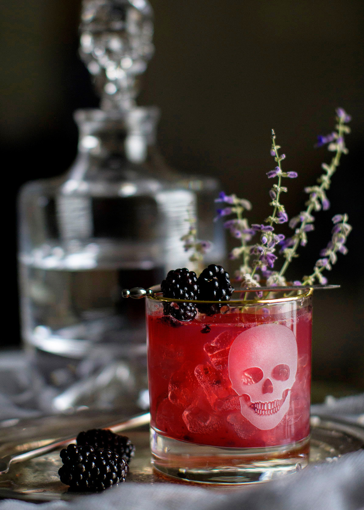

Poison Berry
Whether you’re staying in this Halloween or hosting a spooky soirée, what’s All Hallows' Eve without a few spirits? This tipsy witch has called on one of my favorite spirits, Gin. Shaken over ice with “poison” blackberries, agave nectar and lime juice, this witch’s brew will put you under the best kind of spell.
Dress up your spooky cocktails with these Skull double old-fashioned glasses from Williams-Sonoma and the Skull Decanter. Perfect for your Halloween spirits!
You will need:
|
|
- Muddle 16 blackberries in a cocktail shaker.
- Fill shaker with ice and add gin, agave and lime juice.
- Shake vigorously for 20-30 seconds.
- Divide between two Skull Double Old-Fashioned Glasses and top with Prosecco.
- Garnish with blackberries and fresh thyme.